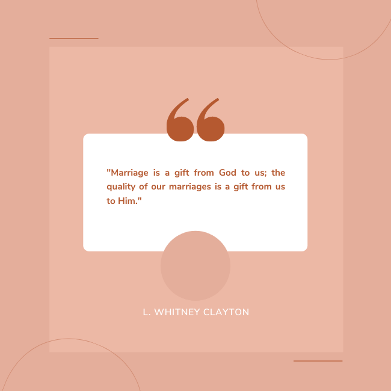

6 Foundations of a Successful Marriage
1. Personal, intentional dedication and commitment to each other.
“Thou shalt love thy wife with all thy heart, and shall cleave unto her and none else.”
(Doctrine &
Covenants 42:22)
“Therefore shall a man leave his father and his mother, and shall cleave until his wife, and they shall be one flesh.” (Genesis 2:24)
What are the qualities of someone who is intentionally dedicated and working on improving their individual self for their spouse?
- patient
- kind
- tolerant and accepting
- courteous
- generous
- caring

“Therefore shall a man leave his father and his mother, and shall cleave until his wife, and they shall be one flesh.” (Genesis 2:24)
What are the qualities of someone who is intentionally dedicated and working on improving their individual self for their spouse?
- patient
- kind
- tolerant and accepting
- courteous
- generous
- caring
2. Love, connect, and build a strong friendship with your spouse.
“Husband and wife have a solemn responsibility to love and care for each other,” - The Family: A Proclamation to the World
3. Have positive interactions with each other.
In healthy marriages, the ratio of positive and negative actions
is 5 positive actions for every 1 negative action.
4. Accept advice from each other, listen, and be willing to compromise.
Marriage is an equal partnership. There should be equal ownership and influence,
and opinions from both spouses are valid. Listen to each other, and learn from each other.
Go to each other for advice. Be open to new ideas and show willingness to compromise.
And possibly the most important, be sensitive to each others feelings.
5. Respectfully handle differences and solve problems together.

Don’t sweat the small stuff. Some things are small enough to be let go!
Before bringing up any differences that need to be solved, keep some things in mind.
Make sure you are calm before bringing an issue up,
and raise the issue gently and privately. Work on reaching an agreement together,
while respecting each others feelings.
6. Establish loving rituals and keep dating each other!
What are some loving rituals that can be established in your relationship
with your spouse?
Some ideas could be:
- Leaving notes around the house for them
- Sending them loving texts throughout the day
- A kiss on the cheek while passing by
- Thoughtful, uplifting comments
Some ideas could be:
- Leaving notes around the house for them
- Sending them loving texts throughout the day
- A kiss on the cheek while passing by
- Thoughtful, uplifting comments